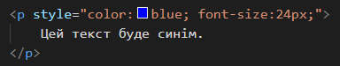
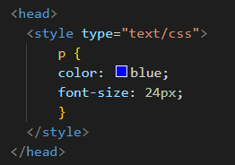

Більше інформації по CSS , атрибутам, їх специфікаціях та правилам вкладення один в одного шукайте тут: |
||
| HTMLreference | CSS.in.ua | HTML Living Standard |
Підключення стилів |
||
|---|---|---|
Вбудовані стилі |
Вбудовані (інлайн) стилі задаються тегу безпосередньо в тезі атрибутом style. Їх неможливо масштабувати, складно перевизначати і використовувати повторно, тому вони застосовуються в дуже рідкісних випадках. Наприклад, для динамічних стилів, які встановлюються під час виконання JavaScript коду, коли ми заздалегідь не знаємо, яке буде значення властивості. |
 |
Вбудована таблиця стилів |
За такого підходу CSS-правила додаються всередину тегу <style> в шапці документа. Їх неможливо використовувати повторно на інших сторінках і складно масштабувати і підтримувати. Іноді цей підхід використовується для оптимізації швидкості відтворення сторінки, додаючи найважливіші стилі безпосередньо в HTML-документ. Ця просунута техніка називається Critical CSS. |
 |